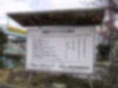
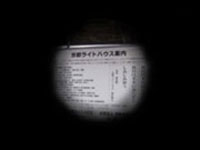
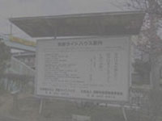

京都ライトハウスから、 障害が起きるとどのように見えるかが記されている。それぞれの写真からどんな障害があるかを書き示す。
近視の人は毛様体筋が緊張して上手く水晶体を調節してピントが合わせられないため、以下のように見える。
視神経に異常が起き、視野が狭くなるため、以下のように見える。
網膜の中央にある、ものを見るために重要な部分である黄斑に異常が出て中心部分が見えなくなる。
他にもゆがんだりぼやけたりもするが、どれも中心部分だけに起こるものである。
白内障の人は水晶体が白く濁る症状が出るため、映る映像が白く濁ってしまう。
正常色覚とされる範囲に無い状態。
一部の色の判別が出来ない（しにくい）。
赤と緑の混合が最も多いとされる。